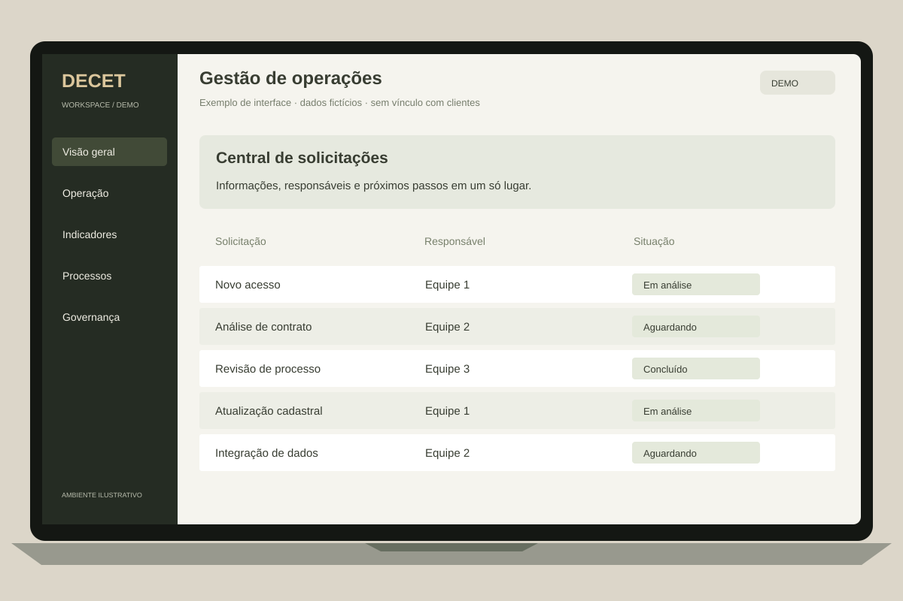

INTERFACE DEMONSTRATIVA · DADOS FICTÍCIOS01 / TECNOLOGIA
Da necessidade real
à solução que funciona.
Sistemas, plataformas e automações construídos a partir do contexto do negócio. Integramos ferramentas, conectamos operações e reduzimos tarefas que limitam a evolução.
- Desenvolvimento sob medida
- Automações e integrações
- Arquitetura de soluções digitais